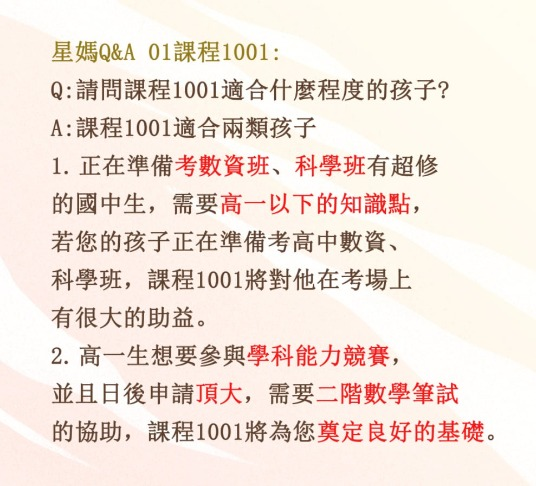
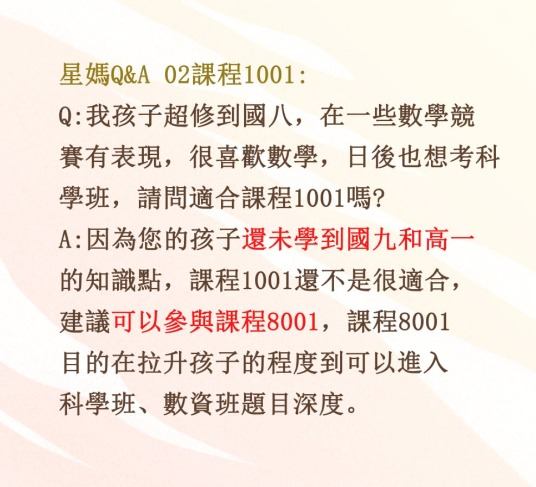
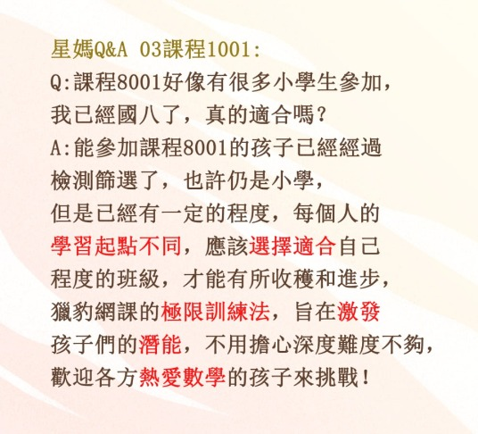
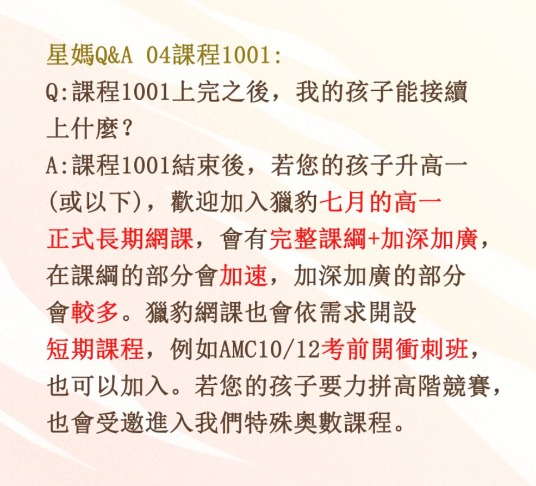
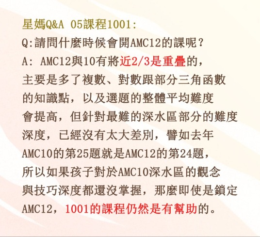
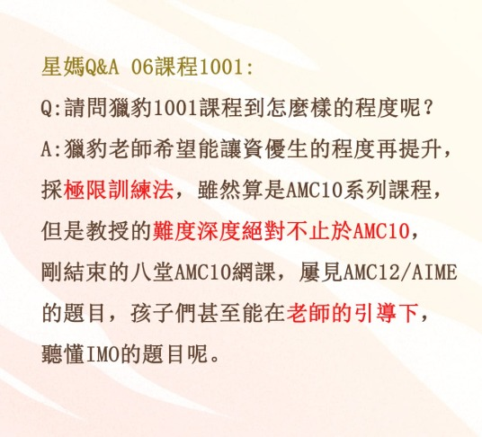
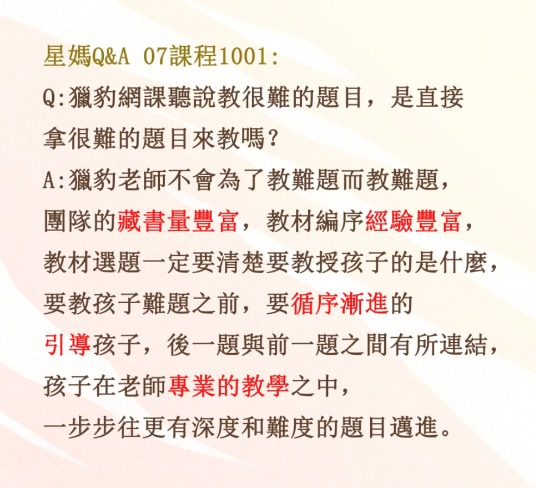
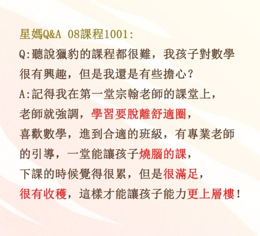
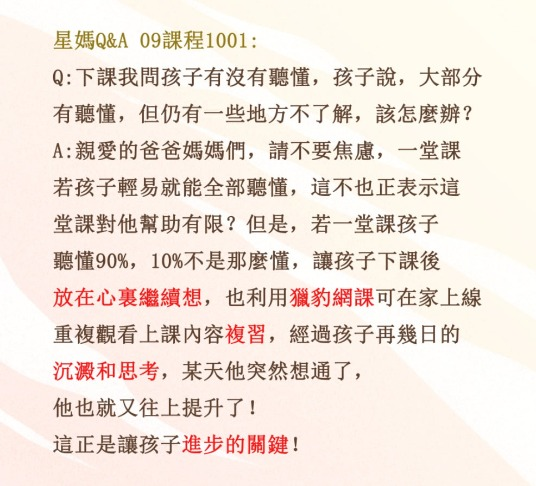
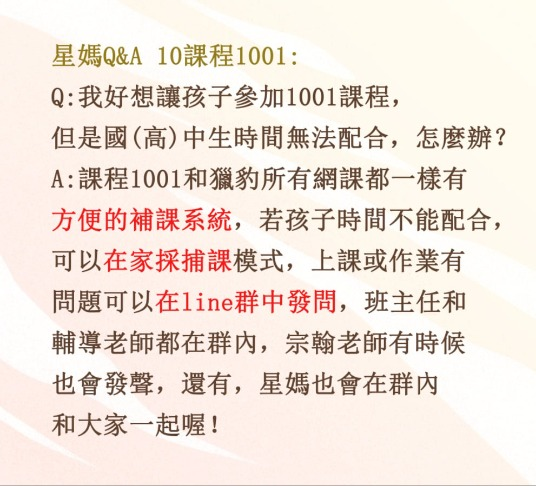

星媽Q&A 課程1001 特別篇
剛公告的課程1001陸續有不少爸爸媽媽們來詢問，為了讓大家更了解，趕緊製作「星媽Q&A 課程1001 特別篇」，希望能幫助大家了解。
目前社團課程有：
8000/8001：適合5-7年級，及未超修到高一的8年級生，奠定良好基礎，日後繼續銜接獵豹更高階的網課。
https://www.facebook.com/....../permalink/748433359442685/
1001：適合正在準備考科學班、數資班的國中生，以及為想要力拼學科能力競賽和頂大二階筆試的高中生奠定良好基礎。
https://www.facebook.com/....../permalink/751269785825709/
AIME初階、進階各兩堂：進階課歡迎預估可以受邀參加AIME的孩子們參加，初階課歡迎正在努力，未來以提高自己數學程度到AIME以上程度為目標的孩子們參與。AIME程度的課程，是老師的理想，特地開出超值體驗價，希望有興趣的孩子們都能一起參與。
https://www.facebook.com/....../permalink/751527089133312/
以上是目前課程介紹，星媽真心要說句話，老師開課，一心都只有想要把最好的課程給孩子們，老師知道熱愛數學的孩子們有需求，但是這樣的課程並不容易找，網課無遠弗屆，老師也盡量壓低費用，讓大家都能參與，也都有學習的機會。謝謝社團內大家的支持，謝謝大家持續介紹朋友們進社團，星媽也希望，社團中的各種資訊，都能為您的孩子在升學之路上，提供最大的助力！
詳細圖文請點下方臉書連結：
https://www.facebook.com/groups/695697124716309/permalink/751738942445460/?mibextid=lURqYx









